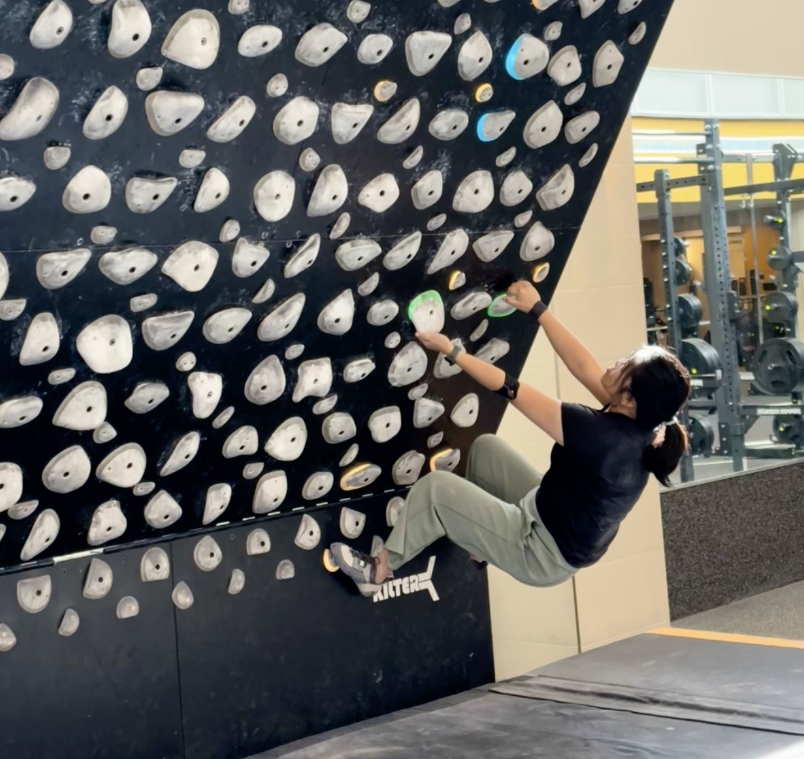

Tong Ding
PhD Candidate, Department of Mathematics
Purdue University
Advisor: Jianlin Xia
Purdue University
Advisor: Jianlin Xia
Research Interests
Numerical Linear Algebra
Randomized Algorithms
Machine Learning
Scientific Computing
| Date | Updates |
|---|---|
| May 2026 | Will give minisymposium talk at ILAS 2026. |
| Feb 2026 | Will attend the ICERM Workshop on Randomized Numerical Linear Algebra (RNLA). |
| Dec 2025 | Attended the CBMS Workshop at the University of Houston. |
| Oct 2025 | Gave minisymposium talk at SIAM Central States Section Annual Meeting. |
Research
My research bridges NLA and ML by (i) exploiting matrix structure arising in NN training and (ii) developing RNLA methods for data compression. The goal is to design fast, stable optimizers and accelerate training from an NLA perspective.
Publications
Matrix analysis for shallow ReLU neural network least-squares approximations
A Structure-Guided Gauss-Newton Method for Shallow ReLU Neural Network
Presentations
Talks
Lightning talk
Why Neural Network Optimization Matrices Are Ill-Conditioned and Why That’s Okay
Workshop on Network Algorithms, Analysis, and Learning for Science, Berkeley, CA
Workshop on Network Algorithms, Analysis, and Learning for Science, Berkeley, CA
2025/11
Minisymposium talk
Matrix Analysis and Fast Solvers in Neural Networks
SIAM Central States Section Annual Meeting, Fayetteville, AR
SIAM Central States Section Annual Meeting, Fayetteville, AR
2025/10
Session talk
Matrix Analysis for Shallow ReLU Neural Network Least-Squares Approximations
22nd Copper Mountain Conference on Multigrid Methods, Copper Mountain, CO
22nd Copper Mountain Conference on Multigrid Methods, Copper Mountain, CO
2025
Minisymposium talk
A Structure-Guided Gauss-Newton Method for Shallow ReLU Neural Networks
International Conference on Preconditioning, Atlanta, GA
International Conference on Preconditioning, Atlanta, GA
2024
Posters
CBMS Conference on Research at the Interface of Applied Mathematics and Machine Learning, Houston, TX
2025/12
NSF Computational Mathematics PI Meeting, Salt Lake City, UT
2025
Professional Activities
President, SIAM Student Chapter, Purdue University
- Organized annual student conferences (2024, 2025 and 2026)
- Co-ran CCAM seminar series
- Community building and professional development
Teaching
I am passionate about teaching mathematics and helping students develop deep understanding by coding.
Teaching Experience
MA 303: Differential Equations for Engineering
Delivered lectures for undergraduate students, prepared course materials, and facilitated class discussions on differential equations topics.
MA 16600: Calculus II
Led recitation sessions and held office hours to support students in mastering calculus concepts.
Graduate Grader
Graded coursework for MA 52700 (Advanced Mathematics for Engineers), MA 35100 (Linear Algebra), and MA 45000 (Abstract Algebra).
Personal

Climbing
Forever V2. Trying to get better one hold at a time.
Snowboarding
Started it for the first time while attending the Copper Mountain conference. I was in the mountains, so why not?